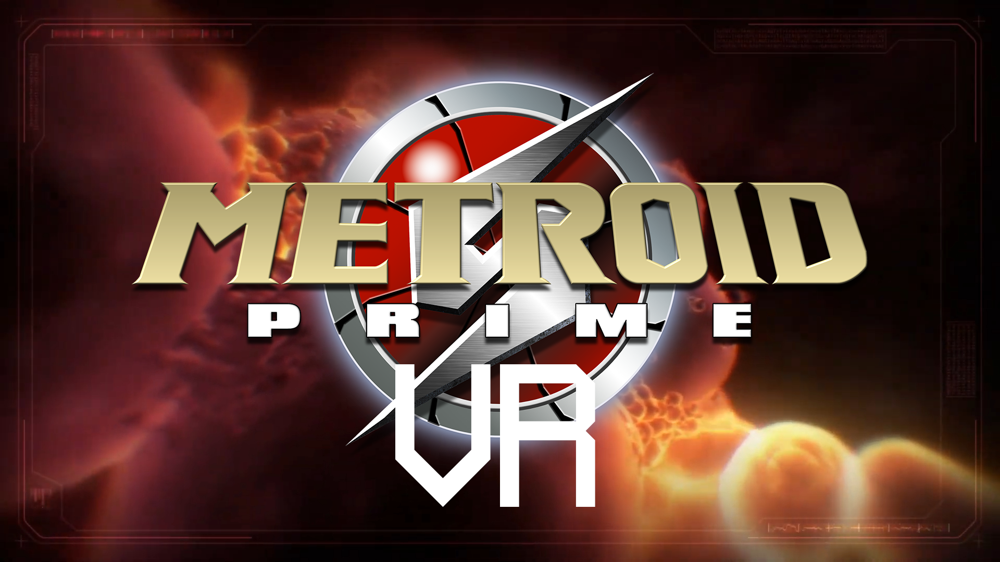

Presentation de Metroid Prime VR et contexte
Metroid Prime VR overview and context
Durant mon Master on a eu un projet d'expérience à réaliser en réalité virtuelle. J'ai choisi de faire une petite expérience basée sur Metroid Prime, un jeu que j'adore.
During my master's degree we had a project to build an experience in virtual reality. I chose to make a short experience based on Metroid Prime, a game I love.
Technologies utilisees
Technologies used
Le projet a été réalisé sur Unity avec le plugin OpenXR pour le développement du jeu, Blender pour la modélisation 3D, Adobe Photoshop pour l'édition des textures, et FL Studio pour l'ajustement des effets sonores et de la musique.
The project was built in Unity with the OpenXR plugin for game development, Blender for 3D modelling, Adobe Photoshop for texture editing, and FL Studio for tweaking the sound effects and music.
Quels sont les objectifs du projet?
What are the goals of the project?
Reproduire le plus fidèlement possible une experience de Metroid Prime en VR, en se basant sur des videos de gameplay et des images du jeu original.
Reproduce a Metroid Prime experience in VR as faithfully as possible, based on gameplay videos and images of the original game.
Ainsi qu'en exploitant pleinement les possibilités de la VR: interaction avec les objets, déplacement par téléportation, et gestion des menus ainsi que de l'affichage du HUD.
And make full use of what VR allows: interacting with objects, moving by teleportation, and handling menus as well as the HUD display.